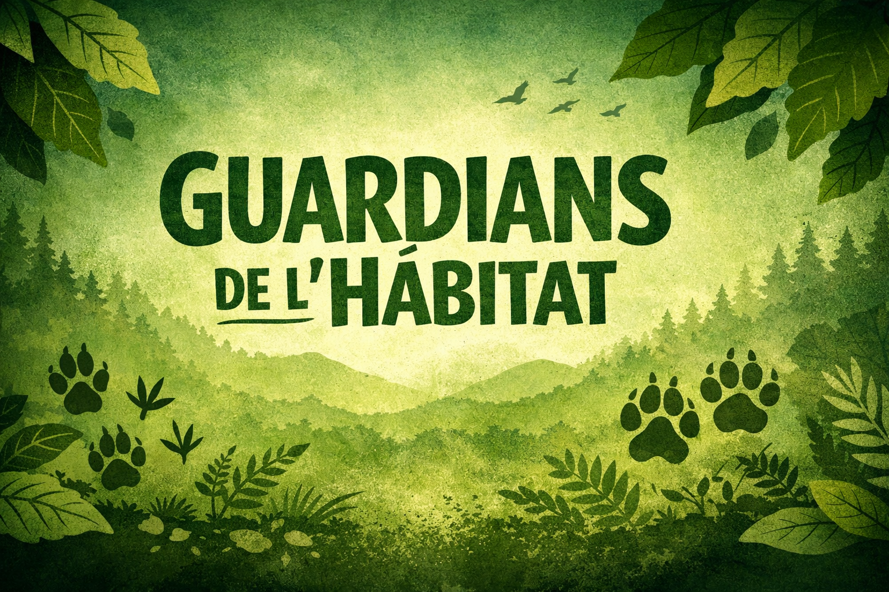

Una experiència per comprendre com els animals expressen emocions i com podem connectar-hi de manera respectuosa i empàtica.
En aquest taller explorarem com els animals expressen emocions i com podem interpretar-les de manera correcta.
Treballarem amb vídeos, dinàmiques vivencials i casos reals per entendre com les emocions influeixen en la convivència entre humans i animals.

Comprendre les emocions dels animals ens ajuda a millorar la convivència, a reforçar el vincle i a garantir el seu benestar emocional.
Quan aprenem a llegir les seves emocions, també aprenem a gestionar les nostres.
“Els animals ens parlen amb la mirada, el cos i el silenci. Només cal aprendre a escoltar.”